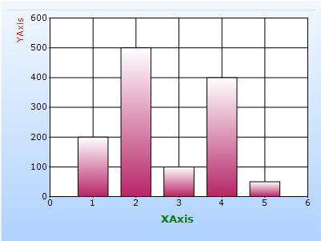

To create an Axis Title in any chart type through Builder:
1. In Controller, return view to the corresponding View page.
[C#]
public ActionResult SimpleChart()
{
return View();
}
2. In the View page, invoke the ChartBuilder by using the control ID as the first argument.
3. Add the Series to the ChartModel and set the series type to Line, and add the Points to the series and set the style.
4. Set the ChartModel and ChartArea properties.
5. Set the PrimaryYAxis Title related properties.
|
View [ASPX]
<%= Html.Chart("SimpleChart").Series(series =>{ //-------------- Add the Series, add the points to the series and set some stylings you want to the series ------------------ .PrimaryYAxis(yaxis => { yaxis.Title("YAxis") .TitleColor(System.Drawing.Color.Red) .TitleAlignment(System.Drawing.StringAlignment.Far);
}) .PrimaryXAxis(xaxis => { xaxis.Title("XAxis") .TitleColor(System.Drawing.Color.Green) .TitleAlignment(System.Drawing.StringAlignment.Center) .TitleFont(new System.Drawing.Font("Verdana",10,System.Drawing.FontStyle.Bold));
}) //------------- Set the required properties to chartmodel to set skin, size, legend visibility and so on ------------------------
%> |
|
View [cshtml] @{ Html.Chart("SimpleChart").Series(series =>{ //-------------- Add the Series, add the points to the series and set some stylings you want to the series ------------------ .PrimaryYAxis(yaxis => { yaxis.Title("YAxis") .TitleColor(System.Drawing.Color.Red) .TitleAlignment(System.Drawing.StringAlignment.Far);
}) .PrimaryXAxis(xaxis => { xaxis.Title("XAxis") .TitleColor(System.Drawing.Color.Green) .TitleAlignment(System.Drawing.StringAlignment.Center) .TitleFont(new System.Drawing.Font("Verdana",10,System.Drawing.FontStyle.Bold));
}).Render(); //------------- Set the required properties to chartmodel to set skin, size, legend visibility and so on ------------------------
}
|
6. Build and run the application, to get the following output:

Figure 276: Customized Axis Titles